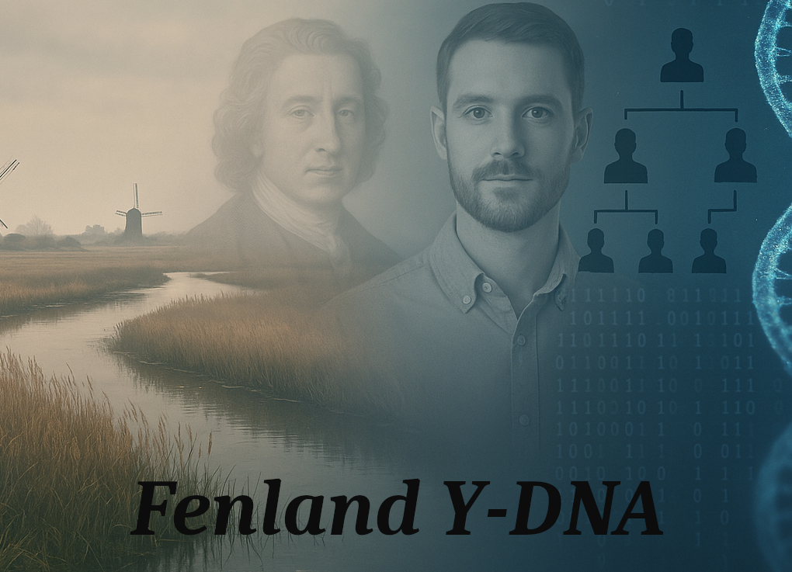

Fenland Y-DNA Campaign

Campaign Aims
This promotional campaign aims to drive the uptake of genealogical Y-DNA testing amongst the current male population of the English Fenlands. It will do so through publicity with the various family and local history groups - and other channels - with an additional hope of being able to sponsor selected testees. The aim is to direct potential candidates to the appropriate project administrators (Surname and/or Geographical) where funds may be available.
This campaign is not in-itself a FTDNA Y-DNA project - it will utilise existing projects and the expertise of current project administrators.
The campaign seeks to launch in late 2025 but this depends on the publication schedules and opportunities for announcements. It is likely to run for at least 6 months.
Suitable Candidates
You need to be:
- A biological male (i.e. have a Y-chromosome)
- Bear a patrilineal surname, i.e. the same surname as your father, his father etc.
- You should have paternal line ancestry from the English Fenlands, which appears on any 19th century census or earlier records from the region.
- If you or any of your direct paternal line are known or suspected to be adopted this needs to be declared.
- Funding, where available. may require additional criteria according to the relevant project administrator
- Ultimately the project administrators will determine the suitabilty of the candidate for their project.
Phased Stages
- Identify the relevant FTDNA projects that have interests in the area
- Contact with the relevant local history / family history groups for advice / target names.
- Arrange talks and/or articles with the above - who is local or can travel there and can speak about Y-DNA ?
Relevant Y-DNA Surname Projects
This is a place-holder for the project list.
| Project Name | Surname(s) | URL | Sponsorship Available ? |
|---|---|---|---|
| P-L-N | Pelling, Peling | https://www.familytreedna.com/groups/pelan/about | Yes |
| Rare Surnames | Rare surnames UK & Ireland | https://www.familytreedna.com/groups/rare-family-names-uk-ireland/about | Maybe |
| Toynbee | Toynbee, Taughenbaugh | https://www.familytreedna.com/groups/toynbee/about/background |
Suggested Names
- Hannent